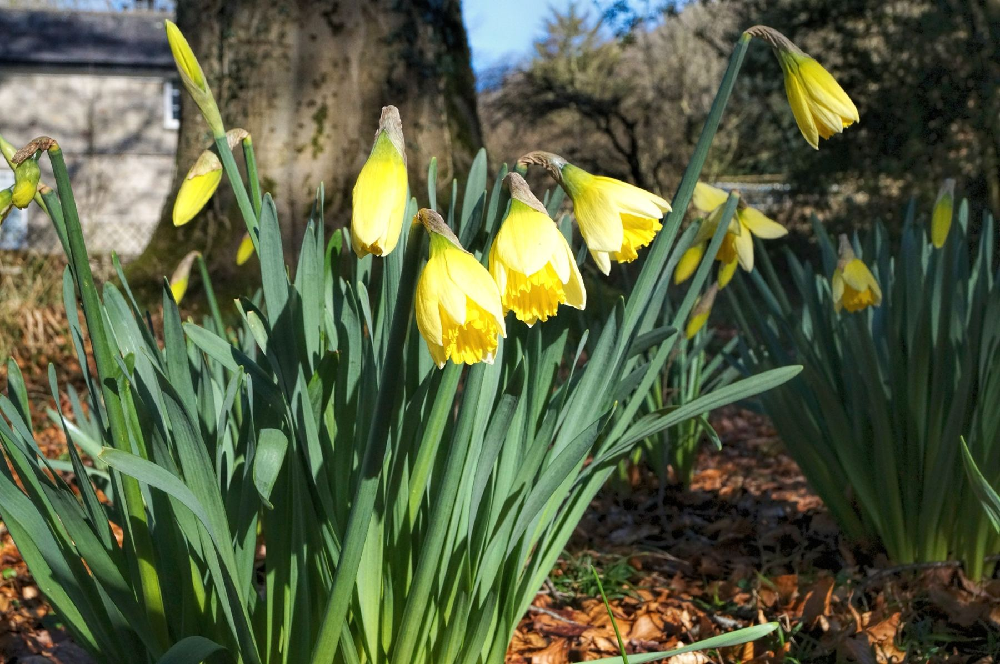

Welcome to Halecat
Our very special holiday house, at the heart of Witherslack Estate. A late Georgian family home for up to eleven guests, by the week or the weekend. Dogs are welcome too.
A house made to be lived in
We know this because we spent our childhoods here. Halecat has been in the Stanley family since it was built in the early 1800s, and all the furnishings are original.
We don't mind you bringing muddy boots or happy dogs, and we believe your children were born to play outside. We promise you won't find a holiday home anywhere else like it.
If the weather is bad and you want to stay in, you'll find squishy sofas, a library of books, a piano for family songs, board games and of course a warm hearth with a real fire.
The Stanley family

What you'll find inside
The hall
In through double doors to a bright lobby with a mosaic floor, then a magnificent double height hall.
The dining room
Room for fifteen if you want to dress up and dine in style. It gets plenty of morning sun, so you can look like the perfect family over your cornflakes.
The sitting room
Light in summer, with doors onto the terrace. On dark winter evenings, close the shutters, get the fire going and enjoy each other's company. The old fashioned way.
The bedrooms
Large, with high ceilings and views for miles over Arnside and Morecambe Bay. The one thing we can promise is a good night's sleep.
The bathrooms
Two en suites with cast iron baths, plus a family bathroom across the landing. Large towels are provided, but don't forget your rubber duck. You can't beat our loo for a view.
The kitchen
Six ring hob, double oven, microwave and a big fridge freezer. You'll never be short of a teapot at Halecat. You just bring the food, the drink and the good company.
A word on the plumbing: it's original, so it can be a little quirky at times. It is heated by the estate's biomass boiler, fuelled from our own woods, with as much hot water as you can handle and central heating throughout.
Fortune Stanley's garden
The gardens were meticulously designed by the late Fortune Stanley, and are known for their rare varieties of roses.
The gazebo is especially peaceful, and croquet and football are often played on the lawn. Head out through the patio doors and the secret gate, and you're into ancient woodland with Morecambe Bay spread out before you. See if you can spot our self service coffee bar in the woods.
Because the garden is so special, it's open to the public from 9 till 5. We don't get many visitors and they're quiet, but if you'd like it to yourselves there's a "garden closed" sign for the gate in the second drawer down of the chest in the hall.
Second drawer down!

A fabulous place for a celebration
Halecat has an air of elegant society, and yet it's still a place where children love to play.
It works for a big birthday, a family get together or a self catering wedding. You're free to use the caterers of your choice, and we're happy to pass on the local suppliers we know and trust, from marquees and catering to photographers and a mobile disco.
The summerhouse
Our listed summerhouse makes a beautiful backdrop for the ceremony, the speeches and the photographs.
The lawn
Big enough for a marquee. We've had a fleet of wedding cars and a boat out on the drive before (not at the same time).
The master bedroom
It has delighted plenty of brides as a dressing room on the big day.
Upstairs, downstairs
The East Wing and stable yard used to be the servants' quarters, butler's pantry, kitchens, parlour and dairy. If you've watched Downton you can imagine the hive of activity it once was.
Nowadays it's a quietly creative place, home to artists' studios and the estate office. You're welcome to pop in and chat to the artists about their work, but they won't disturb you. The house you rent is the whole of the main house to the west.
Extra guests can camp in the garden or the orchard, which is popular for parties and weddings. Moss Howe Farm, about two miles away, has bell tents, yurts and pods, and Witherslack Hall Equestrian Centre does B&B and a bunk barn.
What our guests say
Fabulous house, fantastic gardens (rubbish weather, but you can't have it all). Dogs, kids and adults all exhausted but happy. We'll be back.
Kids loved the piano. Never before has practising been so much fun! And the library: books, books, books everywhere.
Nothing to dislike and everything to love. Halecat always gives us what we need. 9th time here, so far.
Good to know
How many does the house sleep?
There are permanent beds for seven to eight, in three doubles and one roomy single. We can add three extra beds to take you up to eleven, and we have a cot (bring your own bedding). Chat to us about numbers before you book.
Can we bring the dog?
Of course. Halecat is a family home and pets are part of the family. We welcome up to two, as long as they're well behaved. Please bring a bed for them and keep them off the furniture and out of the bedrooms. You might need a lead around our free range hens, and we can't guarantee they won't escape from the garden. (Your pets, not the hens!)
Is the house detached?
Not quite, although it often feels it. Every room looks over the garden, and when you stand on the lawn looking out over Morecambe Bay you may feel like the only person in the world. The artists' studios and estate office are in the East Wing.
What's provided?
A welcome tray of cake, tea, coffee and milk to enjoy before you unpack, plus tea towels, washing up liquid, loo rolls and large towels. Logs and kindling are provided for the fires. There's a washing machine and dryer upstairs.
Where do we shop and eat?
Grange-over-Sands has a good run of independent shops, and the deli at Sizergh Barn is well worth the trip. The village has a community shop. For a pint, walk down to the Derby Arms, known for its food and real ale.
How do we get here?
Halecat is reached from Blea Crag Road by a private drive. Follow the signs for "The House". The nearest bus stop (X6) is a mile away, Grange-over-Sands station is five miles, and Oxenholme on the main line is twelve. We'll send full directions before you arrive.
Check availability
Choose a week or a weekend, pick your arrival day and send us a booking request.
Elaine will check the diary and get back to you to confirm the dates and the price. Nothing is booked or paid for until she does. Rather talk it through? Ring her on 015395 52387.
- You can arrive
- Booked
- Your stay
Thank you
We've got your request for .
Elaine will be in touch soon to confirm. We've sent you an email too, so check your inbox (and the spam folder, just in case).
To check availability and book, ring Elaine on 015395 52387.
Our neighbours at Halecat
The house, the woodyard and the orchards all sit on the same estate, a few minutes' walk apart. More about Witherslack Hall Estate.